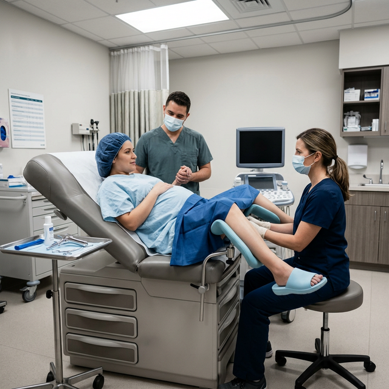

Obstetricia
Frecuencia de la práctica de la episiotomía en una institución en Quito, Ecuador, 2009-2022
person
Mercy Rosero-Quintana, Santiago Vasco-Morales, Karla Benalcázar-Sanmartín, Liseth Salazar-Congacha, Paola Toapanta-Pinta